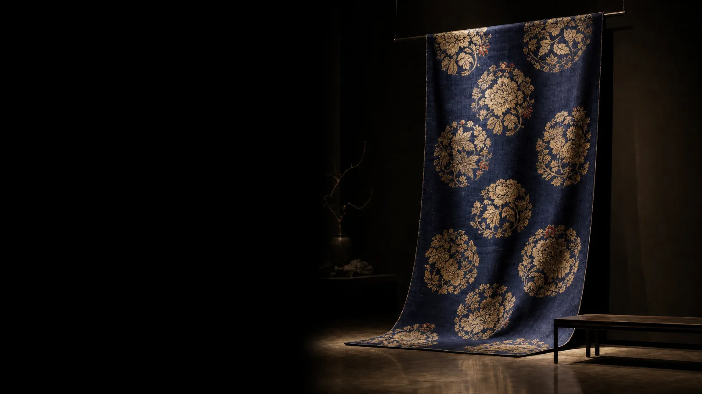
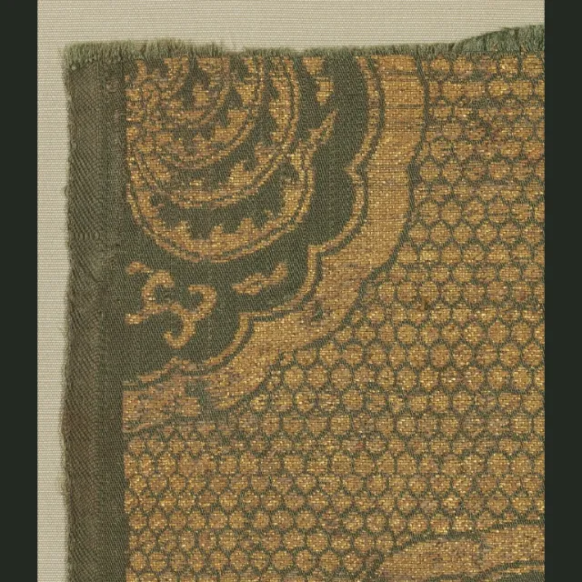
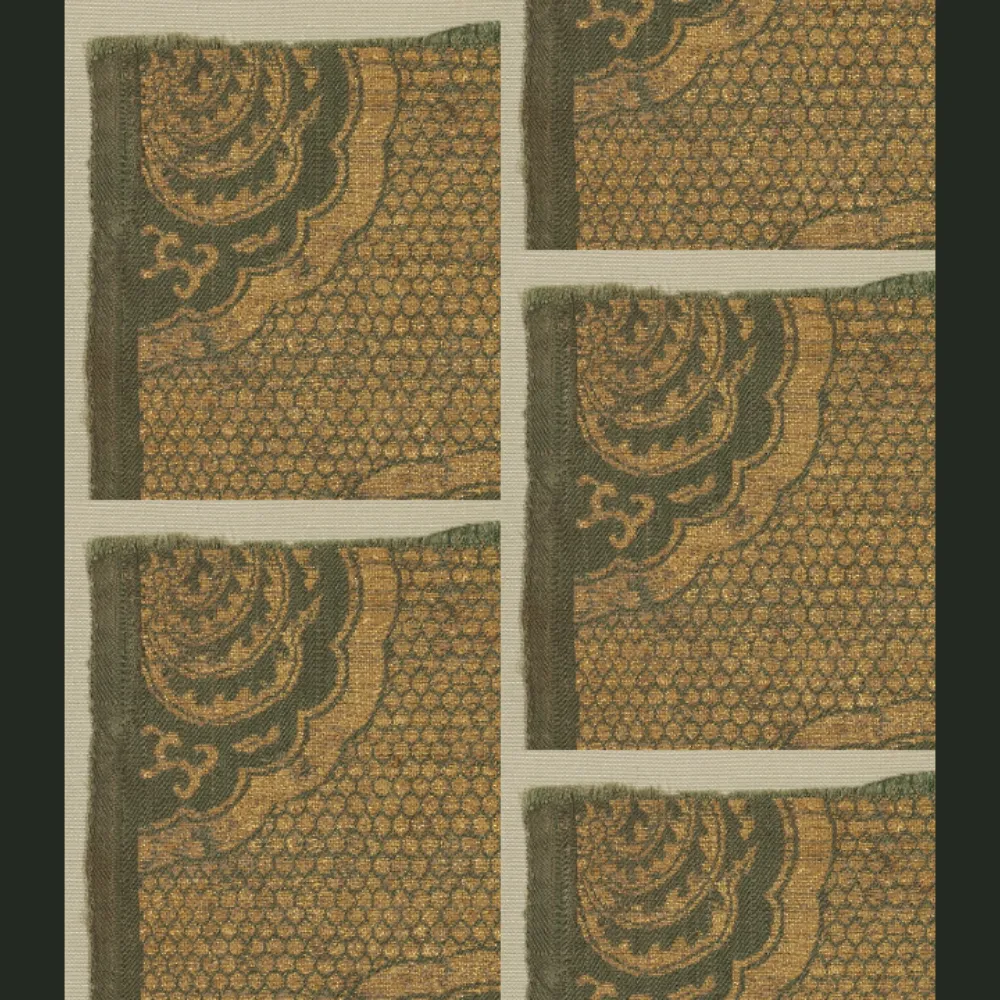
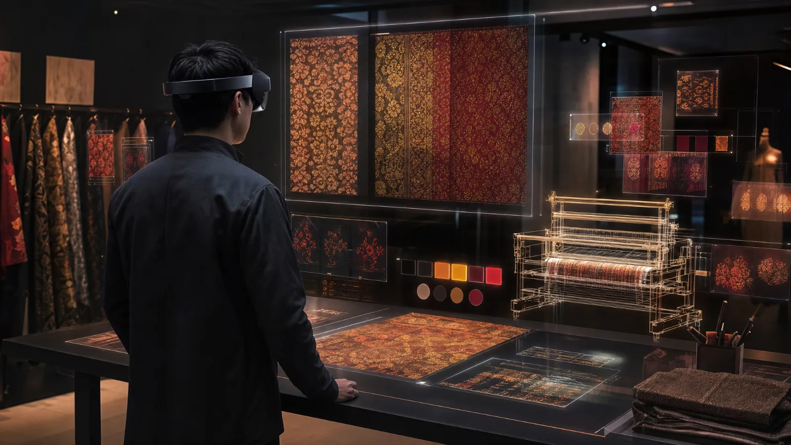

蔡智鑫 浙江科技大学
向下探索01 / 从纹样到规则
一幅好看的纹样，
如何成为可继续设计的方案？
纹样背后，还有构形、配色、组织与工艺。锦序尝试把这些关系转化为可编辑参数，让设计留下依据，也为下一位使用者留下继续工作的入口。
研究对象
南京云锦木机妆花手工织造技艺从数字设计走向工艺复核
- 01
知识
查阅工艺、纹样和材料，保存取材依据。
- 02
规则
记录适用条件、可改字段与待复核项。
- 03
参数
调整母题、铺排、色序与尺度，比较变化。
- 04
组织
在组织图与布料预览之间检查设计关系。
- 05
交接
把图像、参数与引用一同保存，继续编辑。
设计目标 可编辑 · 可检查 · 可移交
02 / 一次轻体验
一枚团花，
看见秩序的变化。
换一种配色，改变铺排与尺度。
同一单元，也能生长出不同的视觉节奏。
几何团花 · 参数演示01 / 黛蓝描金
PATTERN STUDY
从一处改变开始
细密舒展
此处演示视觉参数。完整设计可进入创作台继续。
变化可见，参数可留。
让每一次选择，都可以被继续讨论。
03 / 一条设计流程
从一件馆藏，
走到一份设计包。
以编号 1995.73 的凤龙纹织物演示设计流程，
连接取材、编辑与交付；不作为南京云锦复原。


- 查阅馆藏与著录
- 提取色板与单元
- 编辑铺排与尺度
- 预览平面与空间
- 交付参数与引用
单元不变，
改变的是组织它的方式。
数字设计包保存纹样、参数与引用，便于再次打开、比较方案和继续编辑。这个案例展示工作流的贯通，工艺可行性仍需要样织与专业复核。
用于继续编辑与复核；尚未完成工艺验证。

04 / 设计的空间想象
把素材与工具，
放回创作的现场。
从查阅、取色到调用和比较，
探索空间界面中的连续创作体验。
05 / 继续探索
读懂一件纹样，
也亲手改变它。
目前做到哪里
已形成网页工具、单元参数编辑、平铺与空间预览、项目保存与导出。
正在推进规则评价、交接任务与专家复核；尚未完成实体样织。
使用边界WIF 用于组织交换，不能完整表达妆花工艺；空间概念图不代表已实现的 XR 系统。